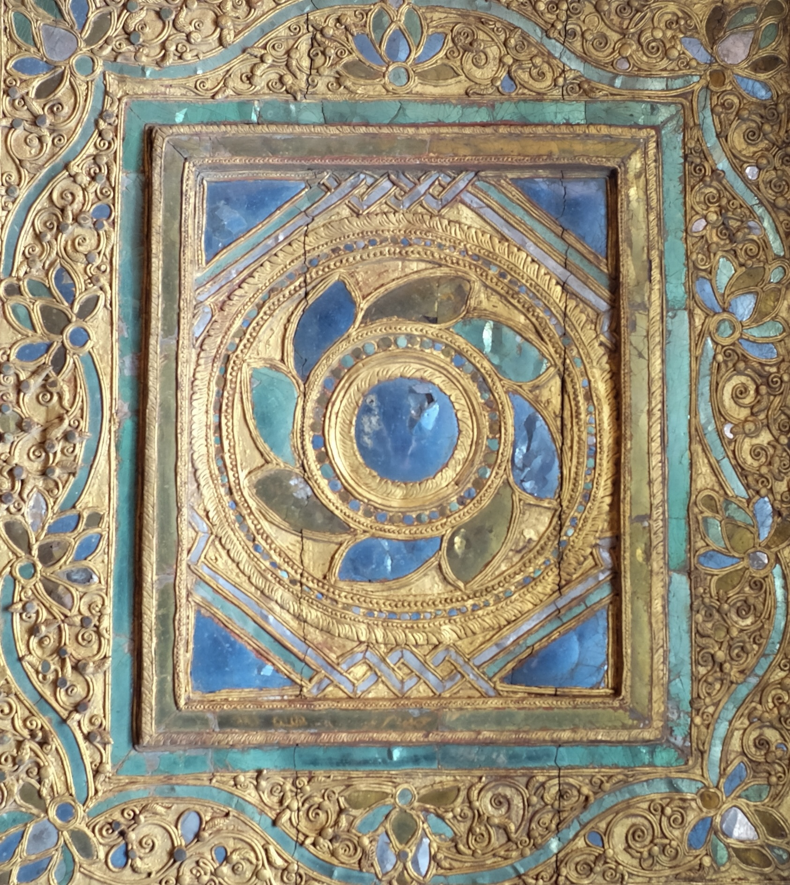

Home
About
Source
I.B. Horner Lecture
Publications
Pali Cosmological Texts
▾
Aruṇavatisaṅgaha
Cakkavāḷadīpanī I–III
Candasuriyagatidīpanī
Chagatidīpanīṭīkā
Lokuppatti
Lokasaṇṭhānajotaratanagaṇṭhi
Mahākappalokasaṇṭhānapaññatti
Okāsalokadīpanī
Pañcagatidīpanī
